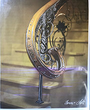

Projekty i wykonanie



Kowalstwo artystyczne Iron-Art zajmuje się nie tylko wyrobami artystycznymi, ale również projektami.
Stworzymy dla Państwa projekt balustrady, pochwytu, projekt świecznika lub projekt dowolnego elementu secesyjnego do zdobienia, według Waszych oczekiwań.
Zachęcamy do zapoznania się z dotychczas wykonanymi projektami oraz do odwiedzenia nas w pracowni w Łodzi. Serdecznie zapraszamy także do zapoznania się z ofertą artystycznie zdobionych balustrad wewnętrznych oraz barkierek schodowych. Ceny naszych wyrobów znajdą Państwo w zakładce sklep.
Ceny za wyroby indywidualne, ustalamy osobiście z klientem.
Zapraszamy!